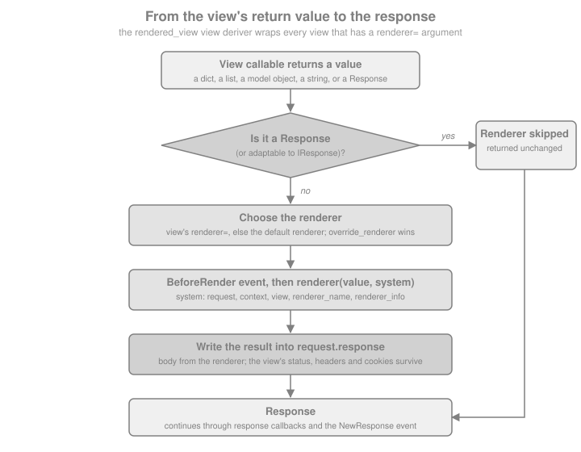

Renderers & JSON
|
This content was generated with the assistance of AI and should be verified against the official documentation before being relied on in production. |
This page is written against Pyramid 2.1 (the 2.1-branch documentation and the 2.1 release installed from PyPI) on
Python 3.13, checked on 2026-10-07; Pyramid 2.1 itself supports Python 3.10 and newer. Every Python example was
executed with those versions and exercised through webtest.TestApp. The running example is the Bookshelf Shelves
scenario: public shelves owned by users, and a JSON API under URL dispatch (/api/books/{id}) that this page
finishes building.
A Pyramid view does not have to build a response. It may return a dictionary, a list, a model object or any other
value, and the renderer named in its view configuration converts that value into a response on the view’s behalf.
This is Pyramid’s answer to what Flask does with jsonify() and Django does with JsonResponse: the view stays a
plain function from a request to data, and the output format becomes a configuration choice. The same view can later
be served as JSON, as text, as CSV or as an HTML page just by changing its renderer= argument. Template languages
plug into the same mechanism; they are covered in the templates page of this section, while this page covers the serialization renderers, writing your own renderer, and the building of a
JSON API.
Related material on this site: the FastAPI equivalent, where return annotations and Pydantic models drive the JSON
output, is in FastAPI: Introduction & Architecture; the Flask
counterpart of the JSON helpers is in Building REST APIs and
Error Handling in the Flask section; and the Tornado section has its own,
much more manual, JSON handling (see Tornado: Applications & Request Handlers). Django’s JsonResponse is
described in the Django introduction.
How Renderers Work
A renderer is associated with a view by the renderer argument of @view_config or Configurator.add_view(). When
the view returns, Pyramid’s rendered_view view deriver (a wrapper applied to every view that has a renderer
argument) decides what to do with the value:
-
if it is a response (a
pyramid.response.Response, an HTTP exception such asHTTPFound, or anything adaptable toIResponse), it is passed back unchanged and the renderer is bypassed entirely; -
otherwise the renderer is looked up (the view’s
renderer=, or the default renderer registered withadd_renderer(None, ...), or the name set inrequest.override_renderer), aBeforeRenderevent is sent, the renderer is called with the value and a dictionary of system values, and the result is written intorequest.response.

Two consequences matter in practice. First, the value is written into request.response, so status, headers and
cookies set on it by the view before returning survive. Second, if a view has no renderer and returns anything that
is not a response, Pyramid raises a ValueError whose message says the return value could not be converted into a
response object (and hints that the renderer may be missing when the value was a dictionary). The most common mistake
is simply forgetting renderer="json", or forgetting return.
Source: Renderers
The string Renderer
The string renderer passes the view’s return value through Python’s str() and sets the content type to
text/plain (unless the view already changed it). It is the simplest renderer and is mostly useful for health checks
and quick diagnostics.
from pyramid.config import Configurator
from webtest import TestApp
def health(request):
return {"status": "ok", "shelves": 2}
with Configurator() as config:
config.add_route("health", "/health")
config.add_view(health, route_name="health", renderer="string")
app = config.make_wsgi_app()
res = TestApp(app).get("/health")
print(res.content_type, res.text)The output is text/plain {'status': 'ok', 'shelves': 2}: the Python repr of the dictionary, not JSON. The
same renderer="string" argument works with @view_config and config.scan(); the examples on this page register
views with add_view() so that they can run as a single script. Do not use the string renderer for an API; the single quotes make the body invalid JSON.
Source: string: String Renderer
The json Renderer
The json renderer is registered by default. It passes the return value through json.dumps() from the standard
library, wraps the result in the view’s request.response and sets the content type to application/json (unless
the view already set another one). The return value does not need to be a dictionary: a list, a string or a number is
valid, as long as everything inside it is serializable by the configured serializer.
from pyramid.config import Configurator
from webtest import TestApp
SHELVES = [
{"owner": "ada", "name": "Computing", "books": 12},
{"owner": "grace", "name": "Compilers", "books": 7},
]
def list_shelves(request):
return SHELVES
with Configurator() as config:
config.add_route("shelves", "/api/shelves")
config.add_view(list_shelves, route_name="shelves", renderer="json")
app = config.make_wsgi_app()
res = TestApp(app).get("/api/shelves")
print(res.content_type)
print(res.json[0]["name"])
print(res.text)The response is application/json, the first shelf’s name is Computing, and the body is the compact JSON array.
Note that the view is a plain function returning plain data; the renderer="json" argument of add_view() does all
the serialization work. The same argument works with @view_config and with the renderer argument of
@view_defaults, so a whole class of API views can share it.
Source: JSON Renderer
Serializing Custom Objects with __json__
json.dumps() knows only the built-in types. For your own classes, Pyramid looks for a method named __json__ on
the object when serialization fails. It must return JSON-native values (dictionaries, lists, strings, numbers,
None, booleans) and it receives the active request as its only extra argument, which makes it possible to put
absolute URLs into the output with request.route_url().
from pyramid.config import Configurator
from webtest import TestApp
class Book:
def __init__(self, book_id, title, author):
self.id = book_id
self.title = title
self.author = author
def __json__(self, request):
return {
"id": self.id,
"title": self.title,
"author": self.author,
"url": request.route_url("api_book", id=self.id),
}
BOOKS = [Book(1, "Dune", "Frank Herbert"), Book(2, "Emma", "Jane Austen")]
def book_list(request):
return BOOKS
with Configurator() as config:
config.add_route("api_book", "/api/books/{id}")
config.add_route("api_books", "/api/books")
config.add_view(book_list, route_name="api_books", renderer="json")
app = config.make_wsgi_app()
res = TestApp(app).get("/api/books")
print(res.json[0])The first element is {'id': 1, 'title': 'Dune', 'author': 'Frank Herbert', 'url': 'http://localhost/api/books/1'}.
Because __json__ is called for every instance found anywhere inside the value (lists, nested dictionaries,
attributes returned by another __json__), a view can return a list of model objects directly. With SQLAlchemy
models the method belongs on the base class or a mixin, so every model is serializable the same way.
Source: Using a Custom json Method
Objects You Do Not Own: JSON().add_adapter
For classes you cannot edit (datetime.date, decimal.Decimal, classes from a library), define adapters on a
customized JSON renderer and register it under the name json with add_renderer(). An adapter is a callable that
receives the object and the request and returns something serializable; it should raise TypeError when it cannot
handle the object. The first argument of add_adapter() may be a class or a zope.interface interface.
import datetime
import decimal
from pyramid.config import Configurator
from pyramid.renderers import JSON
from webtest import TestApp
def date_adapter(obj, request):
return obj.isoformat()
def decimal_adapter(obj, request):
return str(obj)
def book_price(request):
return {"title": "Dune", "added": datetime.date(2026, 1, 2), "price": decimal.Decimal("9.90")}
def broken(request):
return {"thing": object()}
json_renderer = JSON(indent=2, sort_keys=True)
json_renderer.add_adapter(datetime.date, date_adapter)
json_renderer.add_adapter(decimal.Decimal, decimal_adapter)
with Configurator() as config:
config.add_renderer("json", json_renderer)
config.add_route("price", "/api/price")
config.add_route("broken", "/api/broken")
config.add_view(book_price, route_name="price", renderer="json")
config.add_view(broken, route_name="broken", renderer="json")
app = config.make_wsgi_app()
testapp = TestApp(app)
print(testapp.get("/api/price").text)
try:
testapp.get("/api/broken")
except TypeError as exc:
print("TypeError:", "is not JSON serializable" in str(exc))The first request prints an indented body with the keys in alphabetical order, the date as "2026-01-02" and the
price as the string "9.90". The second request shows the failure mode: an object that is neither
JSON-native, nor has a __json__ method, nor has an adapter makes the renderer raise TypeError (... is not JSON serializable), which surfaces as a 500 response unless an exception view handles it. Converting Decimal to a
string, as above, is deliberate: it avoids the precision loss of a float and is what most API clients expect for
money.
The extra keyword arguments of JSON(...) (indent, sort_keys, ensure_ascii, separators, …) are passed on
to json.dumps(). Registering the customized instance under the existing name json overrides the built-in
renderer for every view that uses renderer="json"; registering it under another name (for example "prettyjson")
makes a second renderer available next to the default one. The serializer argument replaces json.dumps itself
(for example by another JSON library); a custom serializer must accept the object, a default callback and the extra
keyword arguments. The documentation recommends adapters, not replacing the serializer, when all that is needed is to
serialize custom objects.
Source: pyramid.renderers.JSON
The jsonp Renderer
JSONP is an old technique to read cross-domain data by including a <script> tag whose body calls a function of the
page. pyramid.renderers.JSONP is a hybrid renderer: if the query string has a parameter named after its
param_name (default callback) it answers with application/javascript and wraps the JSON in a call to that
function; without the parameter it answers with plain JSON. Unlike json, it is not registered by default and has to
be added at startup.
from pyramid.config import Configurator
from pyramid.renderers import JSONP
from webtest import TestApp
def recent(request):
return {"recent": ["Dune", "Emma"]}
with Configurator() as config:
config.add_renderer("jsonp", JSONP(param_name="callback"))
config.add_route("recent", "/api/recent")
config.add_view(recent, route_name="recent", renderer="jsonp")
app = config.make_wsgi_app()
testapp = TestApp(app)
plain = testapp.get("/api/recent")
wrapped = testapp.get("/api/recent", params={"callback": "showRecent"})
bad = testapp.get("/api/recent", params={"callback": "alert(1);//"}, expect_errors=True)
print(plain.content_type, plain.text)
print(wrapped.content_type, wrapped.text)
print(bad.status)The three outputs are application/json {"recent": ["Dune", "Emma"]}, then
application/javascript /**/showRecent({"recent": ["Dune", "Emma"]});, then 400 Bad Request. The renderer validates
the callback name with a regular expression and refuses anything that is not a plausible JavaScript identifier or
dotted path with HTTPBadRequest, which closes the obvious injection hole; the pattern in the 2.1 source requires at
least two characters, so a one-letter function name is rejected too. JSONP accepts the same serializer, adapters
and extra keyword arguments as JSON, and add_adapter() works the same way.
JSONP has a serious security property: any web page can include the script and read the response with the visitor’s cookies. Use it only for public data. Cross-origin reads of JSON should be done with CORS, which is covered, with its Pyramid wiring left to the application, in Cross-Origin Resource Sharing.
Source: JSONP Renderer
Status, Headers and Cookies: request.response
A view that returns a plain value cannot set the status or headers by returning them, so Pyramid gives every request a
pre-built response object, request.response, which the renderer fills in and returns. It is created on first
access, defaults to 200 OK with content type text/html, and is an ordinary pyramid.response.Response
(a WebOb response), so status, status_int, headers, content_type, charset, set_cookie(), cache_control
and location are all available.
from pyramid.config import Configurator
from webtest import TestApp
BOOKS = {}
def add_book(request):
book = request.json_body
book_id = len(BOOKS) + 1
BOOKS[book_id] = {"id": book_id, **book}
request.response.status = 201
request.response.location = request.route_url("api_book", id=book_id)
request.response.headers["X-Shelf"] = "ada/computing"
request.response.set_cookie("last_shelf", "computing", httponly=True, samesite="Lax")
return BOOKS[book_id]
def vendor_type(request):
request.response.content_type = "application/vnd.bookshelf+json"
return {"version": 1}
with Configurator() as config:
config.add_route("api_books", "/api/books")
config.add_route("api_book", "/api/books/{id}")
config.add_route("vendor", "/api/meta")
config.add_view(add_book, route_name="api_books", request_method="POST", renderer="json")
config.add_view(vendor_type, route_name="vendor", renderer="json")
app = config.make_wsgi_app()
testapp = TestApp(app)
res = testapp.post_json("/api/books", {"title": "Dune"})
print(res.status, res.headers["Location"], res.headers["X-Shelf"])
print(res.headers["Set-Cookie"].split(";")[0], res.json)
print(testapp.get("/api/meta").content_type)The first line is 201 Created http://localhost/api/books/1 ada/computing. The second shows the cookie and the
body, last_shelf=computing {'id': 1, 'title': 'Dune'}. The third shows that the json renderer respects a content
type set beforehand: it only replaces the content type when the response still has the default one, which is how
application/vnd.bookshelf+json survives. The same rule holds for the string and jsonp renderers.
Mind the pitfall the official documentation calls out: changes to request.response have an effect only if the view
returns a value for the renderer or returns request.response itself. If the view builds and returns a different
Response, the mutations of request.response are lost.
from pyramid.config import Configurator
from pyramid.response import Response
from webtest import TestApp
def lost(request):
request.response.set_cookie("abc", "123") # has no effect ...
return Response("OK") # ... a different response is returned
def kept(request):
request.response.set_cookie("abc", "123")
return request.response # the same object: the cookie is sent
with Configurator() as config:
config.add_route("lost", "/lost")
config.add_route("kept", "/kept")
config.add_view(lost, route_name="lost")
config.add_view(kept, route_name="kept")
app = config.make_wsgi_app()
testapp = TestApp(app)
print(testapp.get("/lost").headers.getall("Set-Cookie"))
print(testapp.get("/kept").headers.getall("Set-Cookie"))The first list is empty and the second contains abc=123; Path=/. Request and response attributes in general are the
subject of the request and response page, including response callbacks and custom
response factories.
Returning a Response Bypasses the Renderer
The flip side of the pipeline described above: returning a Response (or an HTTP exception object) from a view with a
renderer skips the renderer. This is how a single JSON view can still redirect, answer 204 No Content or serve a
file when the situation calls for it.
from pyramid.config import Configurator
from pyramid.httpexceptions import HTTPFound, HTTPNoContent
from pyramid.response import Response
from webtest import TestApp
STATE = {"deleted": []}
def delete_book(request):
STATE["deleted"].append(request.matchdict["id"])
return HTTPNoContent() # an HTTP exception object is a response
def old_url(request):
return HTTPFound(location=request.route_url("api_books"))
def plain(request):
return Response("OK", content_type="text/plain")
with Configurator() as config:
config.add_route("api_books", "/api/books")
config.add_route("api_book", "/api/books/{id}")
config.add_route("old", "/api/old")
config.add_route("plain", "/api/plain")
config.add_view(delete_book, route_name="api_book", request_method="DELETE", renderer="json")
config.add_view(old_url, route_name="old", renderer="json")
config.add_view(plain, route_name="plain", renderer="json")
app = config.make_wsgi_app()
testapp = TestApp(app)
res = testapp.delete("/api/books/7")
print(res.status, repr(res.body), STATE)
res = testapp.get("/api/old")
print(res.status, res.headers["Location"])
print(testapp.get("/api/plain").text)The three outputs are 204 No Content b'' {'deleted': ['7']}, 302 Found http://localhost/api/books, and OK: the
json renderer never ran, otherwise the body would have been null or "OK" in quotes. HTTPNoContent is the clean
way to answer an empty DELETE; returning None from a JSON view would produce the body null with status 200.
Returning and raising HTTP exceptions, and turning exceptions into JSON error documents, is the subject of the
errors and exception views page of this section.
Custom Renderers: add_renderer
A renderer factory is a callable that receives an info object when the renderer is created at configuration time and
returns (or is) a callable renderer(value, system) that returns a str or bytes body. info has the attributes
name, package, type, registry and settings; system is a dictionary with request, context, view,
renderer_name, renderer_info, req, get_csrf_token and anything added by BeforeRender subscribers. The
renderer can alter system["request"].response for the content type, headers and so on, exactly like a view.
import csv
import io
from pyramid.config import Configurator
from webtest import TestApp
class CsvRendererFactory:
def __init__(self, info):
self.info = info # name, package, type, registry, settings
def __call__(self, value, system):
request = system["request"]
request.response.content_type = "text/csv"
request.response.content_disposition = 'attachment; filename="books.csv"'
out = io.StringIO()
writer = csv.writer(out, lineterminator="\n")
writer.writerow(["id", "title"])
writer.writerows((row["id"], row["title"]) for row in value)
return out.getvalue()
def export(request):
return [{"id": 1, "title": "Dune"}, {"id": 2, "title": "Emma"}]
with Configurator() as config:
config.add_renderer("csv", CsvRendererFactory)
config.add_route("export", "/api/books.csv")
config.add_view(export, route_name="export", renderer="csv")
app = config.make_wsgi_app()
res = TestApp(app).get("/api/books.csv")
print(res.content_type, res.headers["Content-Disposition"])
print(res.text)Source: Adding a New Renderer
The response is text/csv with a Content-Disposition header and three lines of CSV (id,title, 1,Dune,
2,Emma). The name csv has no dot, so the factory is called once per view that names it, with the whole
renderer= value as info.name, and it is meant for object serializers. A name that begins with a dot, such as
.csv, is meant for file-based renderers: the view’s renderer="templates/books.csv" (or an asset specification such
as bookshelf:templates/books.csv) is split at the last dot and the extension picks the factory, which then loads the
file named in info.name. That is how every template language binding (.jinja2, .pt, .mako) is attached.
from pyramid.config import Configurator
from webtest import TestApp
class TemplatePathRenderer:
def __init__(self, info):
self.name = info.name # the full value of renderer=
def __call__(self, value, system):
return f"would load {self.name} with {sorted(value)}"
def page(request):
return {"title": "Dune", "shelf": "ada"}
with Configurator() as config:
config.add_renderer(".tpl", TemplatePathRenderer)
config.add_route("page", "/page")
config.add_view(page, route_name="page", renderer="templates/book.tpl")
app = config.make_wsgi_app()
print(TestApp(app).get("/page").text)The body is would load templates/book.tpl with ['shelf', 'title'].
Source: Adding a New Renderer
System Values and BeforeRender
The BeforeRender event is sent just before every renderer is called (the JSON ones too). Its object is the system
dictionary, so a subscriber can add values that every renderer, and every template, can use. A key that already exists
is overwritten, so subscribers should check before assigning when they do not want to replace a value.
from pyramid.config import Configurator
from pyramid.events import BeforeRender
from webtest import TestApp
class EnvelopeRenderer:
def __init__(self, info):
pass
def __call__(self, value, system):
request = system["request"]
request.response.content_type = "application/json"
import json
return json.dumps({"api": system["api_version"], "data": value})
def add_globals(event):
event["api_version"] = "2026-10"
def books(request):
return ["Dune", "Emma"]
with Configurator() as config:
config.add_subscriber(add_globals, BeforeRender)
config.add_renderer("envelope", EnvelopeRenderer)
config.add_route("books", "/api/envelope")
config.add_view(books, route_name="books", renderer="envelope")
app = config.make_wsgi_app()
print(TestApp(app).get("/api/envelope").json)The result is {'api': '2026-10', 'data': ['Dune', 'Emma']}. Events and subscribers in general (including
BeforeRender as one of the framework events) are covered in the events, tweens and hooks page of this section.
Source: pyramid.events.BeforeRender
A Default Renderer and Changing an Existing One
Passing None as the name registers a default renderer, used by every view that does not name a renderer. It turns
the "no renderer" ValueError into a convention: plain data returned from any view is serialized with the default.
Because add_renderer() takes part in conflict resolution, registering a renderer under an existing name
(including json, as above) simply replaces it.
from pyramid.config import Configurator
from pyramid.renderers import JSON
from webtest import TestApp
def anything(request):
return {"shelf": "computing"}
def explicit(request):
return "explicit"
with Configurator() as config:
config.add_renderer(None, JSON(sort_keys=True))
config.add_route("anything", "/anything")
config.add_route("explicit", "/explicit")
config.add_view(anything, route_name="anything")
config.add_view(explicit, route_name="explicit", renderer="string")
app = config.make_wsgi_app()
testapp = TestApp(app)
print(testapp.get("/anything").content_type, testapp.get("/anything").text)
print(testapp.get("/explicit").content_type, testapp.get("/explicit").text)The first view, with no renderer, comes out as JSON (application/json {"shelf": "computing"}); the second one still
uses the string renderer it names (text/plain explicit). A default renderer is convenient in an API-only
application and risky in a mixed one, where a forgotten renderer= would silently emit JSON instead of failing.
Source: Adding a Default Renderer
Overriding the Renderer at Runtime
An advanced feature: a NewRequest subscriber can set request.override_renderer to the name of a registered
renderer, and that renderer replaces the one named in the view configuration for that request (the attribute is
consumed by the first view rendered). The official example is an XML-RPC layer that sniffs the request and swaps in an
XML-RPC renderer; the same trick can serve ?format=text for debugging.
from pyramid.config import Configurator
from pyramid.events import NewRequest
from webtest import TestApp
def choose_format(event):
if event.request.params.get("format") == "text":
event.request.override_renderer = "string"
def shelf(request):
return {"owner": "ada", "name": "Computing"}
with Configurator() as config:
config.add_subscriber(choose_format, NewRequest)
config.add_route("shelf", "/shelf")
config.add_view(shelf, route_name="shelf", renderer="json")
app = config.make_wsgi_app()
testapp = TestApp(app)
print(testapp.get("/shelf").content_type)
print(testapp.get("/shelf", params={"format": "text"}).content_type)The first request is application/json, the second text/plain. For genuine content negotiation, prefer separate
views with an accept predicate (see the views and view configuration page of this section) over a query-string switch.
Source: Overriding a Renderer at Runtime
The Null Renderer
pyramid.renderers.null_renderer is an object for advanced integration code, not for ordinary applications: given as
the renderer= argument, it makes Pyramid skip the conversion of the view’s result into a response entirely, so the
view configuration and lookup machinery can be reused outside the router. Its API entry is the only place it is
documented.
Source: pyramid.renderers.null_renderer
Calling Renderers Directly: render, render_to_response and get_renderer
Views seldom call renderers explicitly, but three functions in pyramid.renderers exist for the cases where the
renderer is chosen inside the view, or a rendered string is needed for something other than a response (an e-mail
body, a cache entry).
| Function | Behaviour |
|---|---|
|
Runs the renderer and returns its raw result (usually a string). It does not build a response. |
|
Runs the renderer and returns a new response. Changes made to |
|
Returns the renderer object itself, looked up in the given or the current thread-local registry. |
from pyramid.config import Configurator
from pyramid.renderers import render, render_to_response
from webtest import TestApp
def as_text(request):
# a string for non-HTTP use: no response, no content type
body = render("json", {"shelf": "computing"}, request)
return render_to_response("string", f"rendered: {body}", request)
def as_response(request):
custom = request.response.__class__(status=202)
return render_to_response("json", {"queued": True}, request, response=custom)
with Configurator() as config:
config.add_route("as_text", "/as-text")
config.add_route("as_response", "/as-response")
config.add_view(as_text, route_name="as_text")
config.add_view(as_response, route_name="as_response")
app = config.make_wsgi_app()
testapp = TestApp(app)
res = testapp.get("/as-text")
print(res.content_type, res.text)
res = testapp.get("/as-response")
print(res.status, res.json)The first view returns text/plain rendered: {"shelf": "computing"}; the second 202 Accepted {'queued': True}.
Notice that these views have no renderer argument: they return a ready response, so none is needed. The request
argument matters; without it the renderer receives no request or context in its system values, and a
__json__ method or adapter would receive None as the request. render() and render_to_response() are the
same functions the templates page uses to render a template by asset specification.
Source: pyramid.renderers
Building a JSON API for the Bookshelf
Everything above comes together in a small, complete JSON API for the Bookshelf Shelves scenario: list, create,
read, update and delete books under /api/books. It uses URL dispatch, one route per resource shape, view
defaults for the renderer, __json__ on the model, request.json_body for input, HTTP exceptions for errors and
HTTPCreated / HTTPNoContent for the status codes.
import json
from pyramid.config import Configurator
from pyramid.httpexceptions import HTTPBadRequest, HTTPCreated, HTTPNoContent, HTTPNotFound
class Book:
def __init__(self, book_id, title, author, year=None):
self.id, self.title, self.author, self.year = book_id, title, author, year
def __json__(self, request):
return {
"id": self.id,
"title": self.title,
"author": self.author,
"year": self.year,
"url": request.route_url("api_book", id=self.id),
}
class Library:
"""In-memory stand-in for the database of the SQLAlchemy page."""
def __init__(self):
self.books = {1: Book(1, "Dune", "Frank Herbert", 1965)}
self.next_id = 2
def add(self, title, author, year):
book = Book(self.next_id, title, author, year)
self.books[book.id] = book
self.next_id += 1
return book
def body_of(request):
"""The JSON object of the request, or a 400."""
try:
data = request.json_body
except ValueError: # json.JSONDecodeError is a ValueError
raise HTTPBadRequest(json_body={"error": "body is not valid JSON"})
if not isinstance(data, dict) or not data.get("title") or not data.get("author"):
raise HTTPBadRequest(json_body={"error": "title and author are required"})
return data
def find(request):
try:
return request.registry.library.books[int(request.matchdict["id"])]
except (KeyError, ValueError):
raise HTTPNotFound(json_body={"error": "no such book"})
class BookApi:
def __init__(self, request):
self.request = request
def list(self):
return {"books": list(self.request.registry.library.books.values())}
def create(self):
data = body_of(self.request)
book = self.request.registry.library.add(data["title"], data["author"], data.get("year"))
return HTTPCreated(location=self.request.route_url("api_book", id=book.id),
json_body=book.__json__(self.request))
def read(self):
return find(self.request)
def update(self):
book, data = find(self.request), body_of(self.request)
book.title, book.author, book.year = data["title"], data["author"], data.get("year")
return book
def delete(self):
book = find(self.request)
del self.request.registry.library.books[book.id]
return HTTPNoContent()
def make_app():
with Configurator() as config:
config.registry.library = Library()
config.add_route("api_books", "/api/books")
config.add_route("api_book", "/api/books/{id}")
for attr, route, method in [("list", "api_books", "GET"), ("create", "api_books", "POST"),
("read", "api_book", "GET"), ("update", "api_book", "PUT"),
("delete", "api_book", "DELETE")]:
config.add_view(BookApi, attr=attr, route_name=route, request_method=method, renderer="json")
return config.make_wsgi_app()Source: pyramid.httpexceptions
Several details deserve a comment. Each method of the class-based view is registered with attr= (in a real module, @view_config on the methods
plus @view_defaults(renderer="json") on the class and a config.scan() express the same thing without repeating
the renderer). The create view returns an HTTPCreated response object because it needs both a status code and a
Location header, and passes json_body (a WebOb response keyword) to give it a JSON body; this is the bypass of the
previous section used on purpose. A missing or malformed body is turned into a 400 explicitly, because
request.json_body raises a ValueError subclass (json.JSONDecodeError) on invalid JSON, which would otherwise
become a 500. Since Pyramid 2.0, json_body is provided by WebOb’s request, not by Pyramid’s. The error bodies are
produced by HTTP exceptions with a json_body; the generic way of rendering every error, including unexpected ones,
as JSON is an exception view (see the errors and exception views page of this section).
testapp = TestApp(make_app())
res = testapp.get("/api/books")
print(res.status, [b["title"] for b in res.json["books"]])
res = testapp.post_json("/api/books", {"title": "Emma", "author": "Jane Austen", "year": 1815})
print(res.status, res.headers["Location"], res.json["id"])
res = testapp.get("/api/books/2")
print(res.status, res.json["title"], res.content_type)
res = testapp.put_json("/api/books/2", {"title": "Emma", "author": "J. Austen", "year": 1815})
print(res.status, res.json["author"])
res = testapp.post("/api/books", "{not json", content_type="application/json", expect_errors=True)
print(res.status, res.json)
res = testapp.post_json("/api/books", {"title": "No author"}, expect_errors=True)
print(res.status, res.json)
res = testapp.delete("/api/books/2")
print(res.status, repr(res.body))
res = testapp.get("/api/books/2", expect_errors=True)
print(res.status, res.json)
res = testapp.get("/api/books/abc", expect_errors=True)
print(res.status)The outputs, in order, are 200 OK ['Dune'], 201 Created http://localhost/api/books/2 2,
200 OK Emma application/json, 200 OK J. Austen, 400 Bad Request {'error': 'body is not valid JSON'},
400 Bad Request {'error': 'title and author are required'}, 204 No Content b'',
404 Not Found {'error': 'no such book'}, and 404 Not Found again for the non-numeric id. The test uses WebTest’s
post_json, put_json and the .json property of the response; the testing page of this section covers the rest of that API.
With the same module, a consumer of the API from outside looks like this:
curl -i -X POST http://localhost:6543/api/books \
-H 'Content-Type: application/json' \
-d '{"title": "Emma", "author": "Jane Austen", "year": 1815}'HTTP/1.1 201 Created
Content-Type: application/json
Location: http://localhost:6543/api/books/2
{"id": 2, "title": "Emma", "author": "Jane Austen", "year": 1815, "url": "http://localhost:6543/api/books/2"}Two properties of this design are worth pointing out. First, the views are ordinary classes whose methods return data
or response objects, so they are trivially unit-testable with pyramid.testing.DummyRequest without any JSON in the
way. Second, nothing here is specific to Python dictionaries: with the SQLAlchemy page of this section the same views return model instances, and __json__ on the declarative base takes
care of them. Input validation is written by hand here to keep the example small; in a real API, validate the
decoded body with Colander (the forms page of this section) or with a
validation library of your choice.
Source: pyramid.httpexceptions
Pitfalls and Security Notes
-
Forgetting the renderer. A view returning a dictionary without a
rendererfails with aValueErrorat request time ("Could not convert return value … into a response object"), not at startup. A functional test for each view catches it; a default renderer hides it. -
Returning another
Responseafter touchingrequest.response. Cookies and headers set onrequest.responseare lost; returnrequest.responseor set them on the response you return. -
render_to_response()ignores earlier changes torequest.response. Passresponse=explicitly. -
Unserializable values are a 500. Anything the encoder cannot handle raises
TypeErrorduring rendering, which is after the view returned: transactions managed bypyramid_tmmay already be about to commit. Serialize defensively (adapters fordatetime,Decimal,UUID, enums) and test every response shape. -
__json__is an information-disclosure surface. It runs for every instance that reaches the renderer, so an__json__that returns every column leaks password hashes and internal fields. Return an explicit list of fields and never return a model object that does not implement it by accident. -
JSONP and untrusted callers. JSONP lets any web page read the response with the visitor’s credentials. Use it only for public, read-only data, never for authenticated endpoints; prefer CORS.
-
Do not set the content type blindly. The
jsonandstringrenderers replace the content type only if it still has the default one (text/html); a view that setsapplication/jsonitself while returning aResponseskips the renderer’s serializer entirely. -
Large payloads. The renderer builds the whole body as one string in memory. Stream big exports with a response whose
app_iteris a generator (the request and response page of this section) or withFileResponse. -
Errors as JSON. With an API, an HTML 500 page is a bug for the client. Return JSON from exception views for the statuses the API can produce.
What Changed and Where Older Material Is Outdated
| Item | Detail |
|---|---|
Pyramid 1.1 |
|
Pyramid 1.4 |
|
Pyramid 1.6 |
|
Pyramid 2.0 |
HTTP exception responses answer with a JSON document when the client explicitly asks for |
Pyramid 2.1 |
No change to the renderers or the JSON API in the 2.1 change history. |
Older tutorials |
Often register |
Comparison with Other Frameworks
| Concern | Pyramid | Elsewhere on this site |
|---|---|---|
Declare the output format |
|
Flask: |
Serialize custom objects |
|
Flask: JSON provider |
Status and headers from a data view |
mutate |
Flask: |
Bypass serialization |
return a |
Flask: return a |